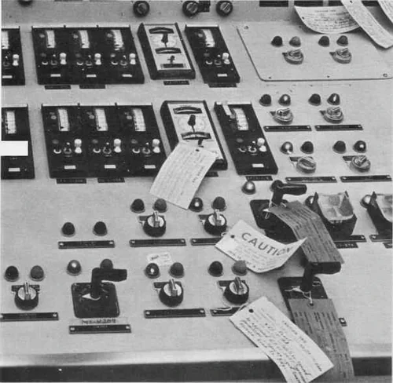
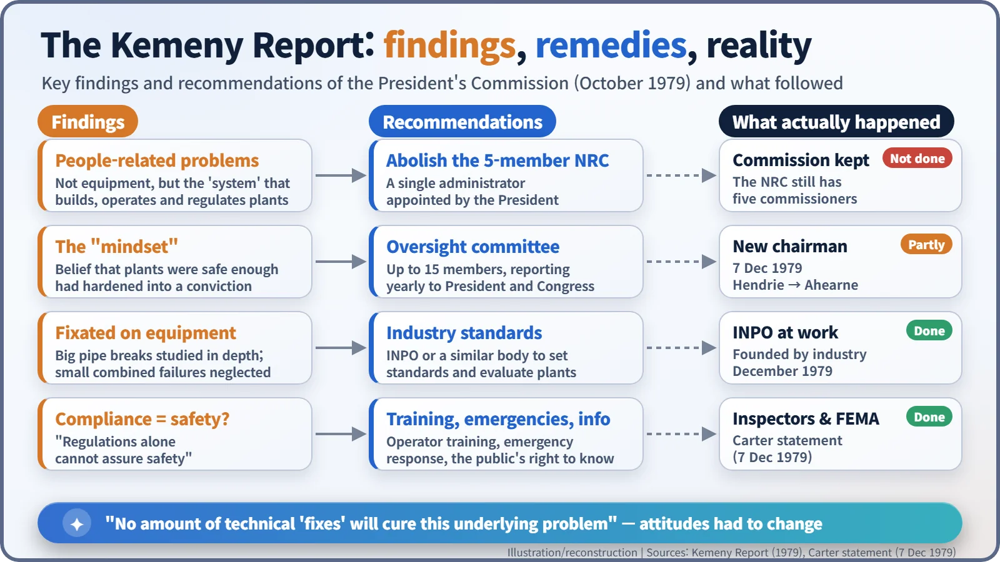
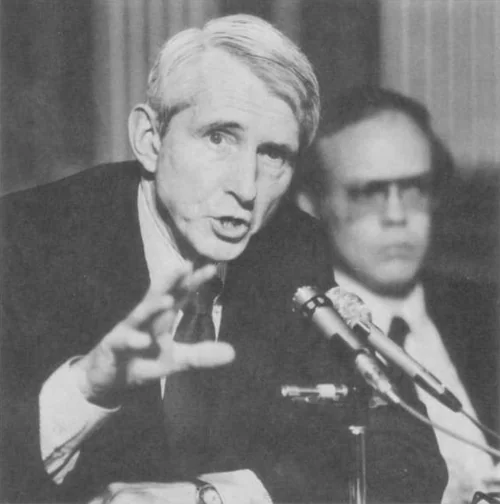
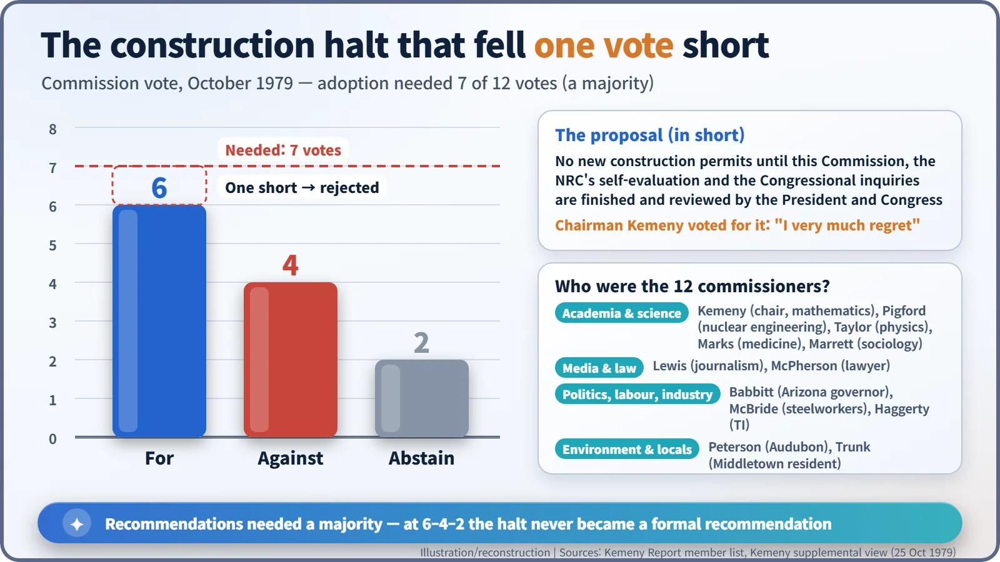

Nuclear History · 252
Five Times in Ten Minutes: the "Mindset" — What the Kemeny Commission Found Behind Three Mile Island (1979)
A mathematician led twelve citizens through six months of hearings and concluded that the problem at Three Mile Island was not the machines but the attitudes around them.
Two weeks after the accident at Three Mile Island in March 1979, President Carter set up an independent commission chaired by the mathematician John G. Kemeny. Its report, delivered on 30 October 1979, concluded that the fundamental problems were "people-related problems and not equipment problems", rooted in a "mindset" that treated nuclear plants as safe enough. Its boldest remedies, abolishing the five-member NRC and pausing new construction permits, were not adopted, but its diagnosis shaped what came next.
One word, five times
Sometime in 1979, at a public hearing of the presidential commission investigating the accident at Three Mile Island (TMI), Roger Mattson took the witness chair. He was director of the Division of Systems Safety at the US Nuclear Regulatory Commission (NRC), and within about ten minutes he used the same word five times: mindset. The commission noticed. Its report later put it plainly: "In the testimony we received, one word occurred over and over again. That word is 'mindset.'" [2]
A mathematician in charge
On 11 April 1979, two weeks after the accident at TMI Unit 2 in Pennsylvania, President Jimmy Carter signed Executive Order 12130. It created "an independent forum to investigate and explain" the accident: the President's Commission on the Accident at Three Mile Island. It was to have no more than twelve members, none of them full-time federal officials, and a final report was due within six months of its first meeting. [5]
The chairman was an unexpected choice: a mathematician. John G. Kemeny (1926–1992), president of Dartmouth College, was born in Budapest and came to the United States in 1940. As a young man he worked in the Theoretical Division at Los Alamos during the Manhattan Project and later served as a research assistant to Albert Einstein. In 1964 he and his colleague Thomas Kurtz created BASIC, the programming language that taught a generation to code. [7]
The other eleven commissioners were just as varied. Alongside a head of nuclear engineering and a physicist sat the governor of Arizona, the president of the United Steelworkers, a journalism professor, a sociologist, the president of the National Audubon Society and a resident of Middletown, the town next to the plant. Whoever chose them clearly did not want a panel made up only of nuclear insiders. [1]
Six months of digging
On 23 May Carter signed a law giving the commission the power to take testimony under oath and to issue subpoenas. A full-time staff of more than 60 held 12 days of public hearings, took more than 150 depositions, went through hundreds of thousands of pages of documents and even analysed coverage in 43 newspapers. The material filled about 300 feet of library shelving. [1]

What turned up was less a story of broken parts than of gaps between people and organisations. Operators testified that, for the first eight minutes, a maintenance tag hung over one of the lights showing that emergency feedwater valves were closed. The information was there, but not in a form a person could easily see.
"People-related problems"
The report, The Need for Change: The Legacy of TMI, went to the President on 30 October 1979 and was released the next day. Its central finding was blunt: "as the evidence accumulated, it became clear that the fundamental problems are people-related problems and not equipment problems." The equipment, it said, was good enough that "except for human failures, the major accident at Three Mile Island would have been a minor incident." [2]
That is easy to misread as "the operators did it". The commission meant something wider: the whole "system" that manufactures, operates and regulates nuclear plants, with its structural problems, deficient procedures and poor communication between key people and groups.
At the heart of it was the mindset. After years without any member of the public being hurt, the belief that nuclear plants were sufficiently safe "grew into a conviction", and everyone was preoccupied with the safety of equipment. Industry and regulators had studied the giant pipe break in great depth, but paid less attention to slower accidents built from small failures, the kind that depend on people making the right calls. TMI was exactly that kind. The report also warned that meeting a mountain of regulations had come to be equated with safety: "regulations alone cannot assure safety."

Bold remedies, and one missing vote
The remedies were sweeping. The present five-member NRC "should be abolished" and replaced by a new independent agency headed by a single administrator, appointed by the President and confirmed by the Senate. An oversight committee of no more than 15 members should watch over reactor safety, and the Advisory Committee on Reactor Safeguards should be strengthened. The industry should set its own standards and evaluate itself, and the report named "the recently created Institute of Nuclear Power Operations, or some similar organization" as a possible vehicle. [3]

One step further was also put to a vote: no new construction permits until the inquiries were finished and reviewed. The result was 6 for, 4 against and 2 abstentions, one short of the seven votes needed. Kemeny, who voted in favour, wrote in a supplemental view: "I very much regret that this important recommendation failed to obtain the seven-vote majority necessary to adopt it." [4]

The President's answer
Carter replied on 7 December 1979. Rather than abolish the NRC, he would strengthen the role of its chairman, and he asked Commissioner John F. Ahearne to take over as chairman from Joseph M. Hendrie (1925–2023). Off-site emergency planning would go to the Federal Emergency Management Agency (FEMA), and a resident federal inspector would be placed at every reactor site. He also drew a line: "we cannot shut the door on nuclear power for the United States." [6]
The NRC is still a five-member commission today. The Rogovin report of January 1980, from the NRC's own Special Inquiry Group, was a separate investigation and is often confused with Kemeny's.
Fixing machines is not enough
The report's closing "Warning" still reads sharply: "No amount of technical 'fixes' will cure this underlying problem." If the same organisations carried out improvements with the same attitudes as before, in a "business as usual" atmosphere, nothing fundamental would change, and public confidence would in time be destroyed.
Few of the recommendations were adopted as written. Yet the report put on official record the idea that safety begins with an organisation's attitudes, not only with its equipment specifications, and that people, training and the flow of information deserve as much attention as hardware. That idea flowed into the regulatory overhaul and industry self-policing that followed.